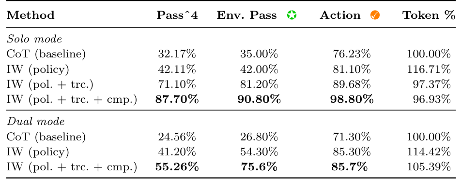
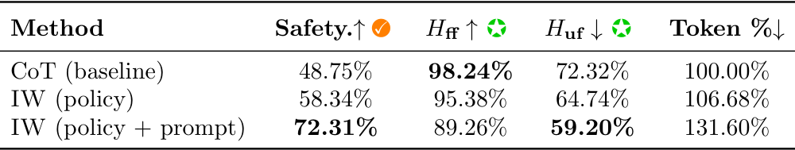
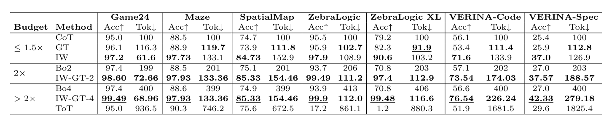
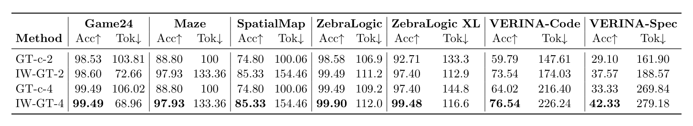
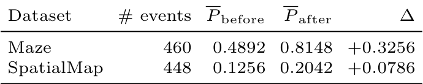
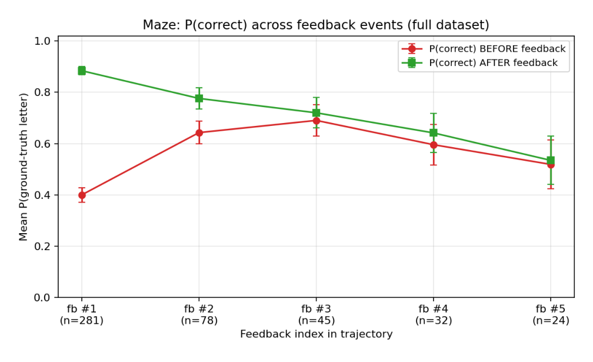
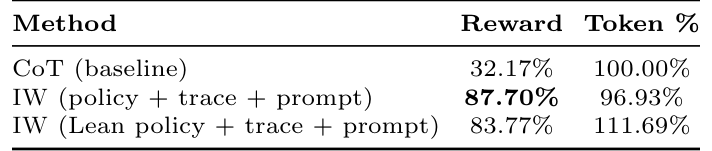
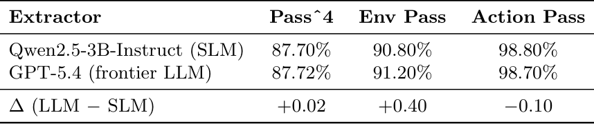

Interwhen: A Generalizable Framework for Verifiable Reasoning with Test-time Monitors
A reasoning agent can reach a plausible final answer after a step it should never have taken: changing a customer's plan without confirming the account, or making an illegal move in a puzzle. Checking only the final answer misses this. Test-time methods that do check intermediate steps usually sample many trajectories and keep the best one, at many times the cost. We show that a single trajectory, checked while it is being generated, is enough.
interwhen monitors the reasoning trace, forks the model to extract the state a check needs, and runs code verifiers on it in parallel with generation. When a check fails, it rolls the trace back and feeds the violation to the model. The verifiers are generated from the natural-language policy, optionally in Lean with a proof that they match a formal specification. On the telecom domain of τ²-bench, Qwen3-30B's task completion goes from 32% to 87.7% at about the token budget of chain-of-thought.

Reasoning under a policy
A model generates a trace token by token. We split it into steps \(\tau = r_0 r_1 \cdots r_m\), where a step is a piece of chain of thought, a tool call or a reflection, and write \(\tau_{\le k}\) for the partial trace up to step \(k\). A policy \(\Pi\) is a set of rules, and each rule judges partial traces:
\[ \pi : \mathcal{T}^{*} \to \{\mathsf{T},\ \mathsf{F},\ \mathsf{U}\}. \]\(\mathsf{T}\) and \(\mathsf{F}\) mean satisfied and violated; \(\mathsf{U}\) means the trace does not yet contain enough information to tell. A trace is policy compliant if no prefix ever violates a rule,
\[ \pi_j(\tau_{\le k}) \neq \mathsf{F} \qquad \text{for every step } k \text{ and every rule } j. \]The goal is strict: return an answer only when the trace is provably compliant, and abstain otherwise. Some rules are about the answer, such as a hotel booking matching the requested dates. Others are about the process, such as every write action being authorised by the user, and those can be broken even when the final answer looks right.
Ingredient 1: extract, verify, intervene
Verifiers need structured inputs, and reasoning traces are free text. A maze move or an order ID is buried in prose, and the reasoning may branch and backtrack. Rather than forcing the model to write in a fixed format, we let it reason freely and recover the state afterwards. Step boundaries come from cheap markers: blank lines, reflection tokens such as "Wait", or tool calls. At each boundary a state extractor \(s(\cdot)\) turns the partial trace into a dictionary of variables. For tool calls this is a parser. Otherwise we fork the model with a separate prompt that asks for the variables, so the main context is never touched.
A set of verifiers implements the policy if, for every rule and every partial trace, running the extractor and then the matching verifier gives the rule's verdict,
\[ v\big(s(\tau_{\le k})\big) = \pi(\tau_{\le k}). \]When the verdict is \(\mathsf{F}\), the verifier also returns a text explanation of what went wrong.
Checks run in parallel. The main model never waits for a verifier. If a check passes, nothing happens. If it fails, generation halts, the tokens after the fork point are discarded, the feedback is appended (for example after "Wait,"), and generation resumes. A trace with no violations therefore finishes as fast as it would without monitoring. The one exception is a write tool call, such as cancelling an order, which waits for its check so it can be blocked before it runs. After five failed retries the system abstains.

Ingredient 2: verifiers from the policy
Outside math and code there are few ready-made verifiers. Given the policy document, the task description and the list of tools, a frontier LLM writes one verifier per rule and a map that says which verifier applies to which state. For example, the τ²-bench retail rule that credit for a cancelled order must go back to the original payment source becomes check_refund_mode(order_id, payment_source, refund_target), run whenever the trace ends in a cancel_order call. This is done once per domain, offline.
Checking the checkers. Generated code can be wrong, and reading it takes expertise. In the formal variant, the LLM writes a Lean specification of each rule, a Boolean implementation, and a proof that the two agree. A verifier is accepted only if the proof checks. A person then only has to confirm that the specification says what the policy means.

When does steering help?
The extractor is a language model, so it can misread the trace, and a correct verifier then judges the wrong state. To see when verification still helps, we model each step as a two-state Markov chain: compliant or violated. On its own, the model breaks compliance with probability \(\delta\) per step and recovers with probability \(\gamma\). With interwhen, the verifier catches a real violation with probability \(\beta\) and passes a compliant state with probability \(\beta'\). Its feedback repairs a violation with probability \(\phi_{\text{fix}}\), and leaves a falsely flagged state intact with probability \(\phi_{\text{safe}}\). The transition probabilities become
\[ a_1 = \beta'(1-\delta) + (1-\beta')\,\phi_{\text{safe}}, \qquad b_1 = \beta\,\phi_{\text{fix}} + (1-\beta)\,\gamma. \]In the long run, interwhen is at least as compliant as the base model exactly when
\[ \frac{\gamma}{\delta} \;\le\; \frac{b_1}{1-a_1}, \]that is, when it improves the odds of returning to compliance relative to the odds of leaving it. If the model can never recover on its own (\(\gamma = 0\)), interwhen is better at every horizon. If false alarms do no harm and feedback repairs violations at least as often as the model recovers unaided, it is at least as good at every finite horizon too (Theorem 4.4).
Results
Agents that follow policy. In τ²-bench telecom, an agent troubleshoots a simulated user's mobile plan under a written policy. Pass^4 counts a task only if it succeeds on all four runs. With verifiers built from the policy alone, Qwen3-30B-A3B-Thinking goes from 32.2% to 42.1%. Refining them from a handful of failing traces lifts it to 71.1%, and adding a check for task completeness to 87.7%, using 96.9% of chain-of-thought's tokens.

The failing traces mattered because the policy itself was incomplete: it said "at most 2GB" where the environment required exactly 2GB. Writing verifiers turned out to be iterative, and the policy got corrected along the way. The same verifiers, unchanged, take Claude Haiku 4.5 from 20.2% to 65.8% and GPT-5.4 Mini from 47.4% to 82.5%. On VitaBench's travel-booking tasks they add 4 to 6 points of reward for both.
Safety, at a price. On AgentSafetyBench, safety rises from 48.75% to 72.31% when instance-specific verifiers are added to the policy ones, and helpfulness on tasks that cannot be completed safely falls, as it should. Helpfulness on tasks that can be completed safely also falls, from 98.2% to 89.3%. The benchmark's policy is vague in places ("don't call tools before obtaining the necessary information"), and the generated verifiers err on the side of blocking.

Cheaper than search. On reasoning puzzles with hard constraints (Game of 24, mazes, spatial maps, ZebraLogic grids, and VERINA code and specification tasks), the natural competitors explore many trajectories: best-of-k with a critic, generate-and-test, and Tree of Thoughts. Grouped by compute budget, interwhen beats chain-of-thought on every task in the cheapest group. On Game of 24 it does so with 62% of the tokens. Tree of Thoughts spends up to about nine times the tokens of chain-of-thought.

Steering also combines with search: if a steered trace fails, restart it with the verifiers still on. With four attempts, this hybrid matches generate-and-test's 99.5% on Game of 24 with 69% of chain-of-thought's tokens instead of 106%.

Does the model listen? On Maze, the probability the model assigns to the correct answer rises from 0.49 just before a feedback message to 0.81 just after, over 460 feedback events. Most of the effect comes from the first message, which lifts it from about 0.40 to 0.89. Later messages arrive on harder instances and help less.


Are the cheap parts good enough?
- Lean verifiers. Generated in a closed loop with machine-checked proofs, they reach 83.8% on τ²-bench telecom, against 87.7% for manually validated Python verifiers.
- A small extractor. Replacing GPT-5.4 with a 3B model as the state extractor changes every metric by less than half a point.
- Non-reasoning models. On ZebraLogic X-Large, interwhen takes the instruct variant of Qwen3-30B from 69.8% to 90.6% with 3% more tokens.


Limitations
- The specification gap. A Lean proof shows that a verifier matches its specification, not that the specification captures what the policy author meant.
- Extraction errors. State is recovered from free text by a model. If it misreads the trace, a correct verifier judges the wrong state.
- Vague policies. Loosely worded rules lead to over-cautious verifiers that block legitimate actions.
- Implicit rules. Rules the policy never states cannot be checked, and catching every violation is still open.
Takeaway
Test-time verification does not have to mean searching over many trajectories. If the state a verifier needs can be pulled out of the trace as it is written, one trajectory can be checked step by step and corrected only when it goes wrong. Generating the verifiers from the policy, with proofs where possible, makes this work for agents and not only for math and code.
Citation
@inproceedings{bhat2026interwhen,
title = {Interwhen: A Generalizable Framework for Verifiable Reasoning with Test-time Monitors},
author = {Bhat, Vishak K and Chanda, Prateek and Ekbote, Vijval and Khandelwal, Ashmit and Swaroop, Maitreyi and Balasubramanian, Vineeth N. and Kambhampati, Subbarao and Natarajan, Nagarajan and Sharma, Amit},
booktitle = {Advances in Neural Information Processing Systems},
year = {2026}
}